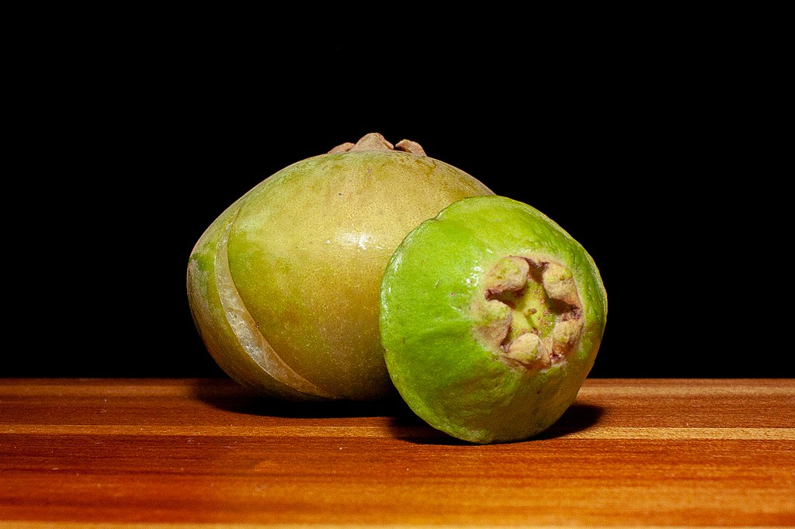
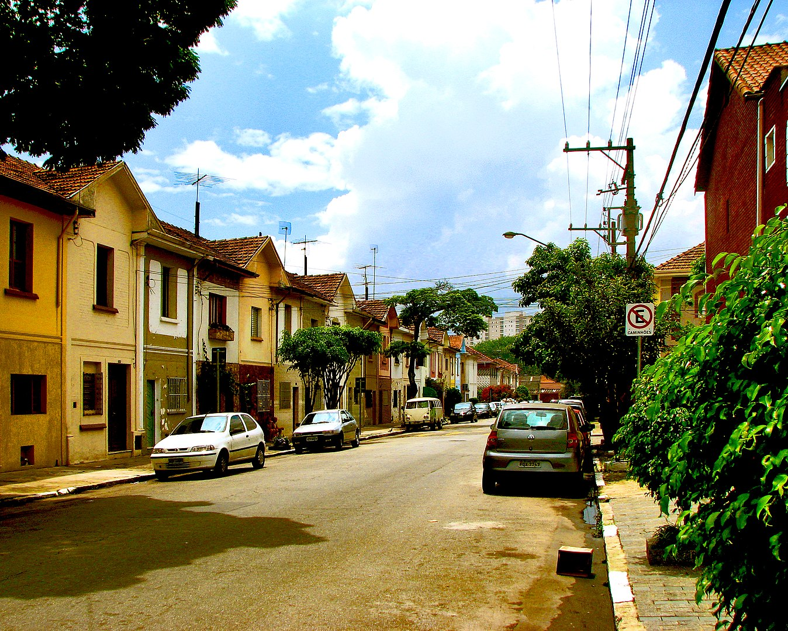

A Trajetória Histórica do Bairro Cambuci, São Paulo
O bairro Cambuci, situado na região central de São Paulo, possui uma história rica que reflete a evolução da cidade ao longo dos anos. Seu nome tem origens na fruta cambuci, uma espécie de palmeira nativa da região que já foi abundante por lá. Inicialmente uma área rural, o bairro passou por uma transformação significativa no decorrer do século XIX.
Durante o século XIX, o Cambuci experimentou um processo de urbanização impulsionado pelo crescimento industrial de São Paulo. O desenvolvimento das linhas férreas e a chegada de imigrantes europeus contribuíram para a expansão do bairro. No entanto, o caráter residencial e arborizado ainda é perceptível nas ruas e praças do Cambuci, conferindo uma atmosfera única em meio à agitação da cidade.
Um aspecto marcante na história do Cambuci é a presença de vilas operárias, construídas no início do século XX para acomodar trabalhadores industriais. Essas vilas representam um importante legado arquitetônico e cultural, testemunhas das condições de vida da classe trabalhadora da época.
Nos tempos atuais, o Cambuci mantém sua identidade peculiar, misturando tradição e modernidade. O bairro abriga uma diversidade de comércios, restaurantes e espaços culturais que refletem a multiculturalidade da cidade de São Paulo. Preservando traços de seu passado enquanto abraça o presente, o Cambuci continua a ser um lugar de memória viva da história paulistana, atraindo moradores e visitantes interessados em sua trajetória única.
Origem do Nome: O nome "Cambuci" tem origens indígenas e refere-se a uma palmeira nativa da região que produz um fruto de mesmo nome. A fruta cambuci era amplamente encontrada nas áreas próximas ao riacho do bairro, que também recebeu esse nome.

Vilas Operárias: O Cambuci possui uma história rica ligada à industrialização de São Paulo. No início do século XX, várias vilas operárias foram construídas no bairro para abrigar trabalhadores das fábricas. Essas vilas, como a Vila Maria Zélia, são exemplos notáveis da arquitetura e do modo de vida da época.

Área Verde: Embora seja uma região urbana, o Cambuci ainda abriga espaços verdes notáveis, como o Parque da Aclimação. Esse parque é um refúgio popular para os moradores do bairro e oferece um ambiente tranquilo para atividades ao ar livre e lazer.
Arquitetura Residencial: O bairro preserva algumas construções históricas, como casarões e edifícios de época, que atestam sua importância durante diferentes períodos da história de São Paulo. Passear pelas ruas do Cambuci pode ser como fazer uma viagem no tempo.
Gastronomia Tradicional: O Cambuci é conhecido por abrigar alguns estabelecimentos tradicionais de gastronomia, incluindo pizzarias, padarias e restaurantes que oferecem pratos típicos da culinária paulistana. A região também tem uma forte ligação com o famoso "sanduíche de mortadela" do Mercado Municipal.
Festival do Cambuci: Anualmente, o bairro realiza o Festival do Cambuci, um evento que celebra a fruta e promove a cultura local. Durante o festival, é possível encontrar pratos especiais feitos com cambuci, além de atividades culturais e gastronômicas.
Preservação Cultural: O Cambuci faz parte do patrimônio histórico e cultural da cidade de São Paulo. A preservação de elementos de sua história e arquitetura é uma preocupação constante de moradores e instituições que valorizam a memória da cidade.
O bairro Cambuci, em São Paulo, já foi lar de alguns famosos. Um exemplo é o cantor e compositor Adoniran Barbosa, um ícone da música brasileira, especialmente do samba paulista. Adoniran Barbosa nasceu em Valinhos, mas passou parte de sua vida no bairro do Cambuci, onde ele ambientou muitas de suas canções que celebram a vida na cidade, incluindo a música clássica "Trem das Onze".
Os irmãos gêmeos Otávio e Gustavo Pandolfo, conhecidos artisticamente como "Os Gêmeos", são artistas urbanos brasileiros renomados mundialmente por suas obras de arte em grande escala. Embora eles tenham laços com São Paulo e tenham deixado sua marca em muitos locais da cidade, incluindo o Cambuci, eles não são originários desse bairro.
Os Gêmeos nasceram em São Paulo, mas cresceram no bairro Cambuci e, posteriormente, se mudaram para o bairro do Cambuci. Suas obras de arte distintivas, que muitas vezes incluem personagens coloridos e surrealistas, são vistas em murais, galerias e exposições de arte ao redor do mundo.
As principais vias do Cambuci
O bairro Cambuci, em São Paulo, possui várias ruas importantes que compõem sua infraestrutura e vida cotidiana. Algumas das principais ruas do bairro são:
Rua do Cambuci: A própria rua que dá nome ao bairro é uma das mais emblemáticas. Ela corta o bairro de ponta a ponta e é repleta de comércios, restaurantes e serviços.
Rua Clímaco Barbosa: Essa rua é uma das principais vias do Cambuci e possui uma variedade de estabelecimentos comerciais e residenciais.
Rua Lavapés: Outra rua importante do bairro, conhecida por sua história e por abrigar diversos pontos comerciais.
Rua Lins de Vasconcelos: Embora parte dessa rua esteja mais próxima ao bairro da Aclimação, ela também atravessa o Cambuci e é relevante para a área.
Rua Vergueiro: Essa é uma via importante que não apenas atravessa o Cambuci, mas também outras regiões da cidade. Ela abriga uma série de comércios e serviços.
Avenida Lacerda Franco: Embora não seja uma rua estritamente do Cambuci, essa avenida circunda parte do bairro e é uma via importante para o tráfego e acesso.